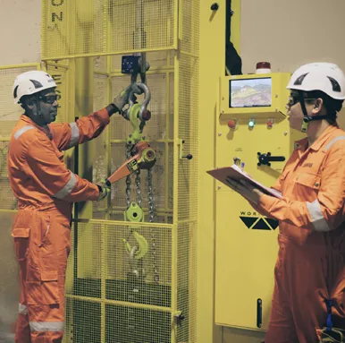
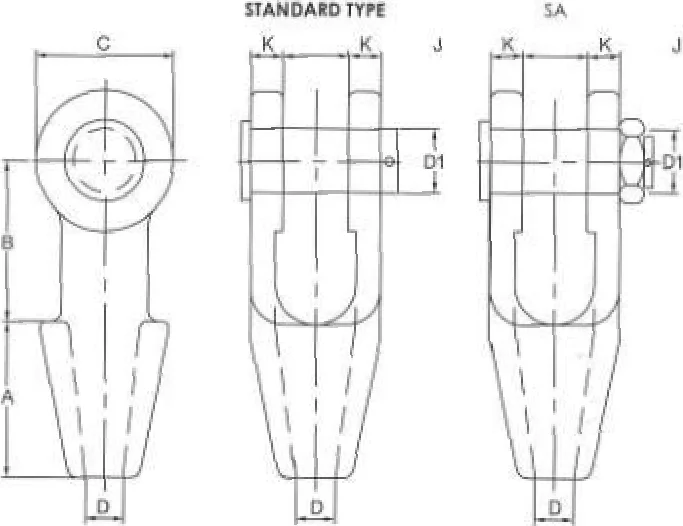

Tăng đơ (turnbuckle)
Tăng đơ hai đầu móc, mắt hoặc ngàm; thân rèn mạ kẽm nhúng nóng hoặc inox 304/316. Dùng căng chỉnh cáp neo giằng, chằng buộc container và hàng trên boong tàu.

Shackle · Turnbuckle · Hook · Hoist
Đầy đủ phụ kiện cho nâng hạ, neo và cẩu – từ ma ní, tăng đơ, móc cẩu đến xích, bu lông, pa lăng, ròng rọc và dây PP. Có chứng chỉ chất lượng, xuất xứ và thử tải.
Rigging hardware
Ngoài các sản phẩm chính là cáp cẩu các loại, Amos Việt Nam còn cung cấp phụ kiện phục vụ cho việc nâng hạ, neo, cẩu. Các sản phẩm đều có đầy đủ các chứng chỉ chất lượng, xuất xứ và chứng chỉ thử tải.

Ma ní chữ D (dee/chain shackle) và ma ní omega (bow/anchor shackle); chốt vặn (screw pin) hoặc chốt bu lông – đai ốc – chốt an toàn (bolt type). Thương hiệu Crosby, Green Pin, Gunnebo, Yoke.
Xem chi tiết
Tăng đơ móc – móc, mắt – mắt, ngàm – ngàm, mạ kẽm hoặc inox, dùng căng chỉnh cáp neo giằng, chằng buộc hàng trên tàu.
Xem chi tiết
Móc an toàn có khóa, móc xoay, móc mắt, móc ngàm cho sling xích và cáp. Xem bảng thông số chi tiết.
Xem chi tiết
Master link và master link assembly làm đầu treo cho sling nhiều nhánh, theo EN 1677-4.
Xem chi tiết
Xích hợp kim cấp 80/100 cho sling xích, xích neo tàu, xích mạ kẽm.
Xem chi tiếtBu lông mắt (eye bolt), mắt nâng (eye nut), bu lông cường độ cao, ty ren, bu lông neo móng.
Xem chi tiết
Pa lăng xích kéo tay, pa lăng lắc tay (lever hoist), pa lăng điện cho bảo trì nhà xưởng và tàu.
Xem chi tiếtRòng rọc mở má (snatch block), ròng rọc cáp đơn, đôi, puly cho tời và cẩu.
Xem chi tiết
Dây neo buộc tàu, dây quấn đệm va, dây PP, PE, nylon cho cảng và tàu biển.
Xem chi tiết
Đầu cốc đóng/mở bằng thép đúc, MBL 3–1.600 tấn, đổ kẽm hoặc nhựa resin.
Xem chi tiếtỐc siết cáp (wire rope clip), ống nhôm, ống thép bấm cáp, khóa cáp, lót cáp (thimble).
Xem chi tiếtDây thừng polypropylene nhiều đường kính cho neo buộc, chằng buộc, boong tàu.
Xem chi tiếtShackle
Ma ní là phụ kiện liên kết quan trọng nhất trong hệ thống rigging. Amos Việt Nam cung cấp ma ní từ vài trăm kg đến hàng trăm tấn cho heavy lifting, thương hiệu Crosby, Green Pin, Gunnebo Lifting, Yoke.
| Cỡ danh nghĩa | WLL (tấn) |
|---|---|
| 3/16" | 0.33 |
| 1/4" | 0.5 |
| 5/16" | 0.75 |
| 3/8" | 1 |
| 7/16" | 1.5 |
| 1/2" | 2 |
| 5/8" | 3.25 |
| 3/4" | 4.75 |
| 7/8" | 6.5 |
| 1" | 8.5 |
| 1-1/8" | 9.5 |
| 1-1/4" | 12 |
| 1-3/8" | 13.5 |
| 1-1/2" | 17 |
| 1-3/4" | 25 |
| 2" | 35 |
| 2-1/2" | 55 |
| 3" | 85 |
| 3-1/2" | 120 |
| 4" | 150 |
Theo catalogue Crosby G-2130 (hệ số an toàn 6:1, tấn = metric tons). Vui lòng liên hệ để nhận datasheet và chứng chỉ chính hãng.
Turnbuckle
Tăng đơ hai đầu móc, mắt hoặc ngàm; thân rèn mạ kẽm nhúng nóng hoặc inox 304/316. Dùng căng chỉnh cáp neo giằng, chằng buộc container và hàng trên boong tàu.
Bu lông mắt (eye bolt) và mắt nâng (eye nut) theo DIN 580/582, bu lông cường độ cao, bu lông neo móng, ty ren, đai ốc và long đen.
Pa lăng xích kéo tay, pa lăng lắc tay và pa lăng điện. Amos Việt Nam có thể thử tải pa lăng và cấp chứng chỉ trước khi bàn giao.
Ròng rọc mở má (snatch block), ròng rọc đơn – đôi, puly cáp cho tời, cẩu và hệ thống kéo cáp.
Sản phẩm liên quan
Câu hỏi thường gặp
Yêu cầu báo giá
Vui lòng cung cấp tên sản phẩm, đường kính, chiều dài, tải trọng làm việc (WLL), tiêu chuẩn và chứng chỉ yêu cầu, số lượng, địa điểm và thời gian cần hàng.